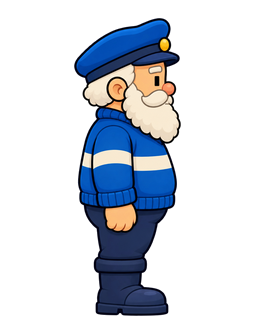
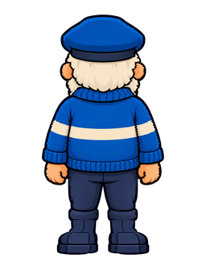
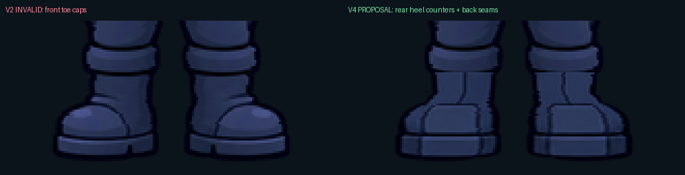
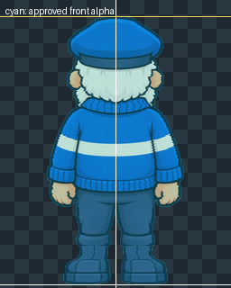

Approved front authority

The V2 back is invalid because its feet face the player. V4 changes only the registered lower-leg/boot region and promotes nothing.
Orientation correction: rounded front toe caps are removed. The proposed boots show flat squared heel backs, rectangular heel-counter panels, vertical back seams and rear sole edges. The complete alpha silhouette remains byte-identical to the approved front.


7228c4027401b70369a9fb4fd0856f8da3baf40c5978dd3336ea56a1748608a2


Rejected provenance only.

Pose/orientation evidence only; not a rendering target.

0 of 81,920 alpha values differ.
Rows 0–272 are byte-identical to V2. The edit begins at source y=273 and ends at y=315. 3,686 pixels change inside that region; 0 change outside it. Cap y=18, floor y=316, 298-pixel height, centreline and transparent gutter are unchanged.
Approval would accept only the corrected back endpoint for later rig construction. The selected side remains blocked by the V3 15-point landmark register. No animation, raw/runtime sprite or manifest has changed.